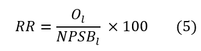

options(scipen = 999)
library(readxl)
library(tidyverse)
library(DT)
library(RODBC)
library(dplyr)
library(sf)
library(ggplot2)
library(geobr)
library(scales)
library(sf)
library(ggrepel)
library(ggspatial)
library(geojsonio)
library(patchwork)Saúde Bucal - material suplementar
Procedimentos metodológicos
A construção do modelo de planejamento da força de trabalho (PDFT) para saúde bucal baseado em necessidades foi elaborado a partir das orientações de Asamani et al. (2021) que sugerem algumas etapas, que serão descritas com maior detalhamento a seguir:
- Definição de escopo da metodologia em termos de cobertura jurisdicional, objetivos e horizonte temporal;
- Análise da necessidade de saúde bucal com base em aspectos da demografia, epidemiologia e serviços destinados da população a local;
- Tradução do número de serviços em número de profissionais necessários;
- Exploração das implicações em termos de recursos, como a oferta atual de profissionais e custos;
- Análise de sensibilidade para simulação de parâmetros de incerteza;
- Validação de modelo por meio de consulta a stakeholders.
Preparando ambiente do R
Carregando os pacotes necessários para o R.
Este documento possui duas seções: A e B. A primeira é uma plicação reduzida para apenas um município, Palmas-TO. Na seção B, nós ampliamos a aplicação para todo os 5570 municípios no território nacional.
1. Definição de escopo
A metodologia tem como objetivo estimar a força de trabalho atual e necessária de cirurgiões dentistas e técnicos e auxilares de saúde bucal para atuação em municípios brasileiros, a nível de atenção primária, em procedimentos de natureza individual, bem como três procedimentos de natureza especializada: endodontia, prótese e periodontia.
2. Análise das necessidades de saúde bucal
A análise da necessidade de saúde bucal (NSB) foi construída a partir de três elementos: distribuição da população por faixa etária (P), prevalência de condições de saúde bucal (H) e procedimentos per capita (S).

Onde:
- NSB = Necessidade de saúde bucal é o número de serviços do tipo t destinados ao atendimento de população de faixa etária i e localidade l;
- P = População por faixa-etária i de uma localidade l;
- H = Prevalência de condições de saúde bucal que levam à necessidade de procedimentos do tipo t por faixa-etária i e dentro de uma localidade l;
- S = Procedimentos per capita do tipo t, para cada faixa-etária i e dentro de uma localidade l.
2.1. Levantando a faixa etária (P)
A distribuição por faixa etária foi construída com base em dados do último censo (2022) e estão disponíveis na página do IBGE.
# leitura dos dados de populacao
# lendo dados do censo
pop_brasil <- read_excel("~/GitHub/saude_bucal/01_dados/populacao_municipio_censo_completa.xlsx")
# tratando para ajustar cada faixa etaria
pop_brasil_tratado <- pop_brasil |>
select(cod_municipiodv,
ibge_sb, municipio,
de_0_a_14_anos,
de_15_a_29_anos,
de_30_a_59_anos,
acima_de_60_anos) |>
gather(key = "faixa",
value = "total",
4:7) |>
mutate(faixa = gsub("_"," ",
faixa)) |>
mutate(ibge = as.character(ibge_sb)) |>
mutate(ibge = substr(ibge_sb, 1, 6)) |>
mutate(cod_municipiodv =
as.character(cod_municipiodv)) |>
mutate(cod_mun_loc = cod_municipiodv) |>
mutate(cod_municipiodv =
substr(cod_municipiodv, 1, 6)) |>
mutate(id_faixa =
case_when(faixa == "de 0 a 14 anos" ~ 1,
faixa == "de 15 a 29 anos" ~ 2,
faixa == "de 30 a 59 anos" ~ 3,
faixa == "acima de 60 anos" ~ 4))Plotando a informação de faixa etária. Nota-se que a faixa etária com maior frequência é de 30 a 59 anos.
ordem <- c("de 0 a 14 anos",
"de 15 a 29 anos",
"de 30 a 59 anos",
"acima de 60 anos")
pop_brasil_tratado$faixa <- factor(pop_brasil_tratado$faixa,
levels = ordem)
pop_brasil_tratado |>
ggplot(aes(x = faixa,
y = total)) +
geom_col() +
theme_minimal() +
coord_flip() +
theme(axis.title.x = element_text(size = 16),
axis.title.y = element_text(size = 16),
axis.text = element_text(size = 16)) +
ggtitle("Distribuição de faixa etária por município")
O censo possui outras divisões de faixa etárias. Utilizamos estas para padronizar com os dados do próximo parâmetro (H), calculado a partir da pesquisa de SB 2010 (subseção seguinte).
2.1.1. Plano de Saúde
A seguir é feito um levantamento de plano de saúde por região de saúde de acordo com dados da ANS.
#|warning: FALSE
hierarquia_municipios <-
read_csv("~/GitHub/saude_bucal/01_dados/hierarquia_atualizada.csv") |>
mutate(cod_municipio = as.character(cod_municipio))Rows: 5570 Columns: 18
── Column specification ────────────────────────────────────────────────────────
Delimiter: ","
chr (12): regiao_pad, regiao, uf_pad, uf, uf_sigla, macrorregiao_pad, macror...
dbl (6): cod_uf, cod_macrorregiao, cod_regsaud, cod_municipio, cod_municipi...
ℹ Use `spec()` to retrieve the full column specification for this data.
ℹ Specify the column types or set `show_col_types = FALSE` to quiet this message.plano_de_saude <-
read_delim("~/GitHub/saude_bucal/01_dados/plano_de_saude.csv",
delim = ",",
escape_double = FALSE,
trim_ws = TRUE) |>
mutate(id_faixa =
case_when(
FAIXA_CORRIGIDA == "de 0 a 14 anos" ~ 1,
FAIXA_CORRIGIDA == "de 15 a 29 anos" ~ 2,
FAIXA_CORRIGIDA == "de 30 a 59 anos" ~ 3,
FAIXA_CORRIGIDA == "acima de 60 anos" ~ 4)) |>
filter(id_faixa != "NA") |>
mutate(CD_MUNICIPIO = as.character(CD_MUNICIPIO)) |>
select(CD_MUNICIPIO, id_faixa, PLANO_ODONTO, POP) |>
janitor::clean_names() Rows: 33630 Columns: 7
── Column specification ────────────────────────────────────────────────────────
Delimiter: ","
chr (2): SG_UF, FAIXA_CORRIGIDA
dbl (5): PERIODO, CD_MUNICIPIO, CD_UF, PLANO_ODONTO, POP
ℹ Use `spec()` to retrieve the full column specification for this data.
ℹ Specify the column types or set `show_col_types = FALSE` to quiet this message.plano_odontologico_rs <-
plano_de_saude |>
left_join(hierarquia_municipios,
by = c("cd_municipio"="cod_municipio")) |>
group_by(uf, uf_sigla,
cod_regsaud,
regiao_saude,
id_faixa) |>
summarise(benef = sum(plano_odonto),
pop = sum(pop)) |>
mutate(cobertura_plano = benef/pop) |>
filter(pop != 0)`summarise()` has grouped output by 'uf', 'uf_sigla', 'cod_regsaud',
'regiao_saude'. You can override using the `.groups` argument.Vamos agora unir à tabela de população possui.
relacao_municipio_rs <- hierarquia_municipios |>
select(cod_municipio,
cod_regsaud)
populacao_tratado <-
pop_brasil_tratado |>
left_join(relacao_municipio_rs,
by = c("cod_municipiodv"="cod_municipio")) |>
left_join(plano_odontologico_rs,
by = c("cod_regsaud",
"id_faixa")) |>
select(-benef, -pop) |>
mutate(pop_sus = total * (1 - cobertura_plano))A variável pop_sus será útil para simular os resultados usando a população que não tem acesso a plano de saúde (exclusivamente odontológico).
2.2. Cobertura de condições de saúde bucal (H)
O Ministério da Saúde traz uma série de parâmetros para planejamento dos serviços de saúde bucal (Brasil, 2021). Um dos parâmetros é a cobertura de serviços de saúde. A cobertura foi calculada a partir da pesquisa SB 2010 para cada faixa etária e tipo de procedimento conforme a lógica expressa abaixo.
Cabe destacar que, devido à estrutura da SB2010, estes parâmetros foram calculados para capitais de cada estado ou interior da região.
| Área | Expressões usadas para cálculo de cobertura |
|---|---|
| Atenção básica | NT_1 (Número de dentes necessitando de restauração de 1 superfície) + NT_2 (Número de dentes necessitando de restauração de 2 ou mais superfícies) + NT_6 (Número de dentes necessitando de extração) + NT_7 (Número de dentes necessitando de controle de lesão branca) + NT_8 (Número de dentes necessitando de selante) + P_CALC (Prevalência de cálculo) + P_BR (Prevalência de bolsa rasa). Foi então criada a variável COB_AB. Se COB_AB = 0 o indivíduo não necessita de procedimentos de atenção básica, se COB_AB =1 ele necessita. A cobertura de atenção básica foi então estimada pelo percentual de pessoas com COB_AB=1 |
| Endodontia | A cobertura de endodontia foi calculada a partir da variável NT_5 (Número de dentes necessitando de tratamento pulpar + restauração). Foi criada a variável ENDO onde ENDO=0 se NT_5=0 e ENDO=1 se NT_5≠0. Desta forma, a cobertura de endodontia foi então estimada pelo percentual de pessoas com ENDO=1 |
| Periodontia especializada | A cobertura de periodontia especializada foi estimada pelo percentual de pessoas com a variável P_BP (Prevalência de bolsa profunda) = 1 |
| Prótese | A cobertura de prótese foi calculada pelo percentual de pessoas com a variável NECPROT (Necessidade geral de prótese) ≠ 0 |
A cobertura de saúde bucal para cada condição e faixa etária são apresentados abaixo.
# Lendo dados
cobertura_sb <-
read_excel("~/GitHub/saude_bucal/01_dados/cobertura sb.xlsx",
sheet = "Cobertura") |>
mutate(ibge = substr(ibge, 1, 6))
# apresentando dados
cobertura_sb |>
select(-ibge,
-id_faixa,
-li_cobertura,
-ls_cobertura)# A tibble: 512 × 4
municipio procedimento faixa_etaria cobertura
<chr> <chr> <chr> <dbl>
1 Porto Velho Atenção Básica 0 a 14 anos 0.69
2 Porto Velho Endodontia 0 a 14 anos 0.074
3 Porto Velho Periodontia 0 a 14 anos 0
4 Porto Velho Prótese 0 a 14 anos 0
5 Rio Branco Atenção Básica 0 a 14 anos 0.625
6 Rio Branco Endodontia 0 a 14 anos 0.071
7 Rio Branco Periodontia 0 a 14 anos 0
8 Rio Branco Prótese 0 a 14 anos 0
9 Manaus Atenção Básica 0 a 14 anos 0.661
10 Manaus Endodontia 0 a 14 anos 0.138
# ℹ 502 more rowsConsiderando os dados de população (P) e de cobertura (H), temos os seguintes resultados para população coberta.
# tratando os dados devido ao padrao de codigo IBGE de 7 digitos em algumas bases
populacao_tratado <-
populacao_tratado |>
mutate(ibge_sb =
as.character(ibge_sb)) |>
mutate(ibge_sb =
str_sub(ibge_sb,
start = 1,
end = 6))
cobertura_sb$ibge <- as.character(cobertura_sb$ibge)
# juntando base de populacao e cobertura de saude bucal
pop_coberta_br <-
populacao_tratado |>
left_join(cobertura_sb,
by = c("ibge_sb" = "ibge",
"id_faixa" = "id_faixa")) |>
select(ibge, ibge_sb,
municipio.x,
faixa, id_faixa,
total, procedimento, cobertura, cobertura_plano,
pop_sus, cod_municipiodv, cod_mun_loc) |>
rename(municipio = municipio.x) |>
rename(cobertura_servicos = cobertura) |>
mutate(populacao_coberta = cobertura_servicos * total) |>
mutate(populacao_coberta = round(populacao_coberta, 2)) |>
mutate(populacao_coberta_sus = cobertura_servicos * pop_sus) |>
mutate(populacao_coberta_sus = round(populacao_coberta_sus, 2))Warning in left_join(populacao_tratado, cobertura_sb, by = c(ibge_sb = "ibge", : Detected an unexpected many-to-many relationship between `x` and `y`.
ℹ Row 1 of `x` matches multiple rows in `y`.
ℹ Row 121 of `y` matches multiple rows in `x`.
ℹ If a many-to-many relationship is expected, set `relationship =
"many-to-many"` to silence this warning.2.3. Parâmetros normativos de procedimentos per capita (S)
Os cálculos de necessidade normativa por procedimento per capita (S) estão disponíveis nos parâmetros do Ministério da Saúde e são baseados na pesquisa de Saúde Bucal (SB 2010).
| Área | Procedimentos |
|---|---|
| Atenção básica | No banco de dados do projeto SB BRASIL 2010 foram transformados os códigos 0 (hígido), A (não examinado) e X (excluído) das variáveis CPI17, CPI11, CPI 27, CPI37, CPI31 e CPI47 em 0 e em 1 para as variáveis que tivessem o código 2 (cálculo) e 3 (bolsa rasa). Ao final essas variáveis foram somadas e a variável NECPERIO_AB criada para armazenar esta soma. Foram somados os valores referentes as variáveis NT_1, NT_2, NT_6, NT_7 e NT_8 formando a variável NEC_AB. Finalmente foram somadas NECPERIO_AB e NEC_AB para se obter a variável NEC_AB_TOTAL. Foi então obtida a média da variável NEC_AB_TOTAL estratificada por idade e domínios geográficos (capitais e interior). |
| Endodontia | Foi obtida a média da variável NT_5 (Número de dentes necessitando de tratamento pulpar + restauração) estratificada por idade e domínios geográficos (capitais e interior). |
| Periodontia | No banco de dados do projeto SB BRASIL 2010 foram transformados os códigos 0 (hígido), A (não examinado) e X (excluído) das variáveis CPI17, CPI11, CPI 27, CPI37, CPI31 e CPI47 em 0 e em 1 para as variáveis que tivessem o código 4 (bolsa profunda). Ao final essas variáveis foram somadas e a variável NECPERIO_ESPEC criada para armazenar esta soma. Foi então obtida a média da variável NECPERIO_ESPEC estratificada por idade e domínios geográficos (capitais e interior). Para as idades de 5 e 12 anos esta variável não foi mensurada no projeto SB BRASIL 2010, portanto não há dados de necessidade normativa para a faixa de 0 a 14 anos. |
| Prótese | A variável NECPROT foi transformada em NUMPROT (número de próteses) como explicitado a seguir:
Foi então obtida a média da variável NUMPROT estratificada por idade e domínios geográficos (capitais e interior). Para as idades de 5 e 12 anos esta variável não foi mensurada no projeto SB BRASIL 2010, portanto não há dados de necessidade normativa para a faixa de 0 a 14 anos. |
O código abaixo acessa dados de produção normativa em Palmas-TO, disponível nos parâmetros do Ministério da Saúde.
# leitura do dado de producao normativa (S)
producao_normativa_br <-
read_excel("~/GitHub/saude_bucal/01_dados/cobertura sb.xlsx",
sheet = "Produção normativa",
col_types = c("text","text",
"text","text",
"numeric","numeric",
"numeric","numeric")) |>
mutate(ibge = substr(ibge, 1, 6))
producao_brasil <- producao_normativa_br |>
select(-municipio,
-li_cobertura,
-ls_cobertura,
-faixa_etaria)
# juntando populacao coberta e producao normativa para calcular o total de servicos necessarios
necessidades_servicos_br <- pop_coberta_br |>
left_join(producao_brasil,
by = c("ibge" = "ibge",
"id_faixa",
"procedimento")) |>
mutate(nec_servicos =
populacao_coberta * producao_pc) |>
mutate(nec_servicos =
round(nec_servicos, 2)) |>
mutate(nec_servicos_sus =
populacao_coberta_sus * producao_pc) |>
mutate(nec_servicos_sus = round(nec_servicos_sus,2))
necessidades_servicos_br |>
select(municipio,
faixa,
total,
procedimento,
nec_servicos,
nec_servicos_sus) |>
rename(populacao = total) |>
group_by(faixa, procedimento) |>
summarise(populacao = sum(populacao),
servicos = sum(nec_servicos),
servicos_sus = sum(nec_servicos_sus))# A tibble: 16 × 5
# Groups: faixa [4]
faixa procedimento populacao servicos servicos_sus
<fct> <chr> <dbl> <dbl> <dbl>
1 de 0 a 14 anos Atenção Básica 41001697 71981199. 67417874.
2 de 0 a 14 anos Endodontia 41001697 405112. 379098.
3 de 0 a 14 anos Periodontia 41001697 0 0
4 de 0 a 14 anos Prótese 41001697 0 0
5 de 15 a 29 anos Atenção Básica 46121201 124786034. 111764255.
6 de 15 a 29 anos Endodontia 46121201 641403. 579714.
7 de 15 a 29 anos Periodontia 46121201 9917. 8767.
8 de 15 a 29 anos Prótese 46121201 1734770. 1591539.
9 de 30 a 59 anos Atenção Básica 86610211 300918456. 239430723
10 de 30 a 59 anos Endodontia 86610211 865072. 674932.
11 de 30 a 59 anos Periodontia 86610211 880860. 705967.
12 de 30 a 59 anos Prótese 86610211 121367874. 98866375.
13 acima de 60 anos Atenção Básica 31643236 18243746. 16119166.
14 acima de 60 anos Endodontia 31643236 20514. 17893.
15 acima de 60 anos Periodontia 31643236 51160. 44859.
16 acima de 60 anos Prótese 31643236 58942437. 53570762.3. Tradução do número de serviços em número de profissionais necessários
A etapa 3 consiste na tradução do número de serviços, calculado pela equação 1, em número de profissionais necessários (NPSB). Para isso, devem ser considerados dois elementos: produtividade (T) e o tempo total disponível (TTD).

Onde:
- NPSB = Necessidade de profissionais de saúde bucal;
- NSB = Necessidade de saúde bucal contabilizada pelo número de serviços do tipo t destinados ao atendimento de população de faixa etária i e localidade l;
- T = Tempo médio de serviços do tipo t;
- TTD = Tempo total disponível de um profissional ao longo de um ano.
Vamos utilizar como tempo médio de consulta (T) o valor de 25 minutos. Esse valor foi baseado em um levantamento utilizando técnicas de time-motion realizado para aferir o tempo médio de procedimentos executados pela equipe de saúde bucal, em unidades básicas de saúde em São Paulo, Brasil (Bellotti et al, 2024).
O tempo total disponível (TTD) corresponde ao tempo de um profissional deduzidas ausências programáticas (ex.: férias, feriados) e não programáticos (ex.: licenças para tratamento de saúde). Vamos utilizar como referência o TTD estimado em 1576 horas, frequentemente usado para enfermeiros. Infelizmente, não temos estudos que já tenham levantado um TTD para profissionais de saúde bucal no Brasil.
Este resultado indica quantos cirurgiões dentistas por mês são necessários ao longo de um ano para cobrir as necessidades da população.
# calculando a necessidade de profissionais com base no total no tempo medio de procedimentos e TTD
necessidades_prof_br <-
necessidades_servicos_br |>
mutate(nec_prof = case_when(
procedimento == "Atenção Básica" ~ (nec_servicos * 25/60)/1576,
procedimento == "Endodontia" ~ (nec_servicos * 35/60)/1576,
procedimento == "Periodontia" ~ (nec_servicos * 50/60)/1576,
procedimento == "Prótese" ~ (nec_servicos * 60/60)/1576)) |>
mutate(nec_prof_sus = case_when(
procedimento == "Atenção Básica" ~ (nec_servicos_sus * 25/60)/1576,
procedimento == "Endodontia" ~ (nec_servicos_sus * 35/60)/1576,
procedimento == "Periodontia" ~ (nec_servicos_sus * 50/60)/1576,
procedimento == "Prótese" ~ (nec_servicos_sus * 60/60)/1576)) |>
mutate(nivel = if_else(
procedimento == "Atenção Básica",
"APS",
"AES")) |>
group_by(ibge, municipio,
nivel, cod_municipiodv,
cod_mun_loc) |>
summarise(necessidade = sum(nec_prof),
necessidade_sus = sum(nec_prof_sus)) |>
mutate(necessidade = round(necessidade, 2)) |>
mutate(necessidade_sus = round(necessidade_sus, 2))
necessidades_prof_br |>
ungroup() |>
select(municipio,
nivel,
necessidade,
necessidade_sus) # A tibble: 11,140 × 4
municipio nivel necessidade necessidade_sus
<chr> <chr> <dbl> <dbl>
1 Porto Velho AES 138. 113.
2 Porto Velho APS 431. 369.
3 Rio Branco AES 166. 158.
4 Rio Branco APS 221. 212.
5 Abaetetuba AES 62.7 58.9
6 Abaetetuba APS 160. 152.
7 Abel Figueiredo AES 2.54 2.2
8 Abel Figueiredo APS 5.98 5.23
9 Abreulândia AES 2.3 2.09
10 Abreulândia APS 4.91 4.63
# ℹ 11,130 more rows4. Exploração das implicações em termos de recursos, como a oferta atual de profissionais e custos
O próximo passo consiste em algumas etapas, sendo elas:
- Obtenção da oferta de profissionais;
- Cálculo de valor líquido da oferta;
- Comparação da oferta com necessidades;
4.1. Obtenção da oferta de profissionais
A oferta de profissionais foi acessada usando o Cadastro Nacional de Estabelecimentos de Saúde - tabela Profissionais (CNES-PF).
Como profissionais podem ter múltiplos vínculos, padronizou-se a contagem por meio do Full-time equivalent (FTE), com base na carga horária de contrato.
# codigo para acessar dados de datalake proprio
dremio_host <- Sys.getenv("endereco")
dremio_port <- Sys.getenv("port")
dremio_uid <- Sys.getenv("uid")
dremio_pwd <- Sys.getenv("datalake")
channel <- odbcDriverConnect(sprintf("DRIVER=Dremio Connector;
HOST=%s;
PORT=%s;
UID=%s;
PWD=%s;
AUTHENTICATIONTYPE=Basic Authentication;
CONNECTIONTYPE=Direct",
dremio_host,
dremio_port,
dremio_uid,
dremio_pwd))
query <- 'SELECT * FROM "Analytics Layer".Infraestrutura.Profissionais."TSB e dentistas por municipio"'
oferta <- sqlQuery(channel, query,
as.is = TRUE)
dim(oferta)[1] 18322 7A consulta SQL que gerou esta tabela de dados está descrito abaixo.
Acessamos dados de todos os municípios para a COMPETEN (mês e ano) de janeiro de 2024. Foram acessados dados de Cirurgiões dentistas e Técnicos e Auxiliares de Saúde Bucal. Acessamos registros de profissionais atuantes no SUS e na saúde suplementar a partir da variável PROF_SUS. Para uma primeira análise vamos fazer simulações apenas para o recorte de profissionais SUS.
Foram acessados dados dos seguintes tipos de unidade (TP_UNID):
- Atenção Primária à Saúde (APS)
- 01 - Posto de saúde
- 02 - Centro de Saúde/Unidade Básica
- 32 - Unidade Móvel Fluvial
- 40 - Unidade Móvel Terrestre
- Atenção Especializada à Saúde (AES)
- 36 - Clínica/Centro de Especialidade
- 73 - Pronto atendimento
- 04 - Policlínica
- 22 - Consultório Isolado
Não foi incluída a força de trabalho atuante em hospitais, tendo em vista o escopo da metodologia.
WITH PROF AS(
SELECT
CNES,
CODUFMUN,
COMPETEN,
PROF_SUS,
CASE
WHEN TP_UNID = '01' OR
TP_UNID = '02' OR
TP_UNID = '32' OR
TP_UNID = '40' THEN 'APS'
WHEN TP_UNID = '36' OR
TP_UNID = '73' OR
TP_UNID = '04' OR
TP_UNID = '22' THEN 'AES'
END NIVEL,
SUBSTR(CBO, 1, 4) AS FAM_CBO,
CASE
WHEN substr(CBO, 1, 4) = '2232'
THEN 'Cirurgião-dentista'
WHEN substr(CBO, 1, 4) = '3224'
THEN 'Técnico ou Auxiliar de Saúde Bucal'
END CATEGORIA,
(HORAOUTR + HORAHOSP + HORA_AMB) AS ch_total,
CAST((CAST(HORAOUTR + HORAHOSP + HORA_AMB AS FLOAT)/CAST(40 AS FLOAT)) AS FLOAT) AS fte40
FROM Dados.cnes.PF pf
WHERE (substr(CBO, 1, 4) = '2232' OR
substr(CBO, 1, 4) = '3224') AND
COMPETEN = '202401' AND
NIVEL IS NOT NULL
)
SELECT CODUFMUN,
PROF_SUS,
NIVEL,
FAM_CBO,
CATEGORIA,
SUM(ch_total) AS CH,
ROUND(SUM(fte40),2) AS fte40
FROM PROF
GROUP BY
CODUFMUN,
PROF_SUS,
NIVEL,
FAM_CBO,
CATEGORIAO script abaixo fazer alguns tratamentos em relação à oferta, pois nem todos os municípios terão profissionais em atenção especializada, por exemplo.
Temos que assegurar que tenhamos 44560 linhas na tabela (5570 municípios x dois níveis de atenção x duas categorias profissionais x dois tipos de vínculo, SUS e não SUS). Por isso é feito o tratamento abaixo.
# Definindo o vetor com 5570 município
vetor <- unique(necessidades_prof_br$cod_municipiodv)
# Cada elemento do vetor será repetido 8 vezes (2 valores para 'nível', 2 valores para 'profissional' e 2 valores para 'SUS')
vetor_duplicado <- rep(vetor, each = 8)
# Criando a coluna 'nível' com valores alternados entre 'APS' e 'AES'
nivel <- rep(c("APS", "AES"), each = 4, length.out = length(vetor_duplicado))
# Criando a coluna 'profissional' com valores alternados entre 'dentista' e 'TSB'
profissional <- rep(c("2232", "3224"), each = 2, length.out = length(vetor_duplicado))
# Criando a coluna 'SUS' com valores alternados entre 0 e 1
SUS <- rep(c('0', '1'), length.out = length(vetor_duplicado))
# Criando o DataFrame
df <-
data.frame(
elemento = vetor_duplicado,
nivel = nivel,
profissional = profissional,
SUS = SUS
)
df <- df |> rename(ibge = elemento)
df$ibge <- as.character(df$ibge)
oferta_brasil <-
df |>
left_join(oferta, by = c("ibge"="CODUFMUN",
"nivel"="NIVEL",
"SUS" = "PROF_SUS",
"profissional" = "FAM_CBO"))
oferta_brasil$fte40[is.na(oferta_brasil$fte40)] <- 0
oferta_brasil$CH[is.na(oferta_brasil$CH)] <- 0
dim(oferta_brasil)[1] 44560 74.2. Cálculo de valor líquido da oferta
O cálculo do valor líquido da oferta é feito por meio da fórmula 3:

Onde:
- O = Oferta de profissionais em dada localidade l;
- E = Total de profissionais atuantes em estabelecimentos de saúde em dada localidade l;
- AD = Percentual da carga de trabalho dedicada a atividades diretas (%);
- FC = Percentual da carga de trabalho dedicada a um foco clínico (%)
Não temos números associados a AD e FC. Vamos utilizar os valores abaixo, no entanto, já pensando na simulação mais a frente.
# calculando a oferta de profissionais apos deducao de carga de trabalho dedicada a atividades diretas e ao foco clinico.
oferta_brasil <-
oferta_brasil |>
mutate(FTE_40_direto = fte40 * 0.80) |>
mutate(FTE_40_linha = FTE_40_direto * 0.80)
oferta_brasil |>
head() ibge nivel profissional SUS CATEGORIA CH fte40
1 110020 APS 2232 0 Cirurgião-dentista 40 1.00
2 110020 APS 2232 1 Cirurgião-dentista 3930 98.25
3 110020 APS 3224 0 Técnico ou Auxiliar de Saúde Bucal 20 0.50
4 110020 APS 3224 1 Técnico ou Auxiliar de Saúde Bucal 3930 98.25
5 110020 AES 2232 0 Cirurgião-dentista 11341 283.53
6 110020 AES 2232 1 Cirurgião-dentista 1900 47.50
FTE_40_direto FTE_40_linha
1 0.800 0.6400
2 78.600 62.8800
3 0.400 0.3200
4 78.600 62.8800
5 226.824 181.4592
6 38.000 30.40004.3. Implicações de resultados em termos quantitativos
Por fim, são feitos os cálculos entre oferta e necessidade. São aplicadas duas métricas:
Resultado Absoluto (RA), que é referente à diferença entre oferta e necessidade, conforme equação 4;
Resultado Relativo (RR), que se refere à diferença percentual entre oferta e necessidade, conforme equação 5.

Onde:
- RA = Resultado absoluto;
- O = Oferta de cirurgiões-dentistas em dada localidade l;
- NPSB = Necessidade de cirurgiões-dentistas em dada localidade l;

Onde:
- RR = Resultado relativo;
- O = Oferta de cirurgiões-dentistas em dada localidade l;
- NPSB = Necessidade de cirurgiões-dentistas em dada localidade l;
Os cálculos são realizados conforme os scripts:
oferta_brasil_cd <-
oferta_brasil |>
filter(profissional == "2232" &
SUS == "1")
cd_oferta_vs_demanda_br <-
necessidades_prof_br |>
left_join(oferta_brasil_cd,
by = c("cod_municipiodv"="ibge",
"nivel" = "nivel"))
cd_oferta_vs_demanda_br$FTE_40_linha[is.na(cd_oferta_vs_demanda_br$FTE_40_linha)] <- 0
cd_oferta_vs_demanda_br$fte40[is.na(cd_oferta_vs_demanda_br$fte40)] <- 0
cd_oferta_vs_demanda_br$FTE_40_direto[is.na(cd_oferta_vs_demanda_br$FTE_40_direto)] <- 0
cd_oferta_vs_demanda_br <-
cd_oferta_vs_demanda_br |>
mutate(ra = FTE_40_linha - necessidade,
rr = (FTE_40_linha/necessidade) * 100,
ra_s = FTE_40_linha - necessidade_sus,
rr_s = (FTE_40_linha/necessidade_sus) * 100) |>
mutate(ra = round(ra, 2),
rr = round(rr, 2),
ra_s = round(ra_s, 2),
rr_s = round(rr_s, 2)) |>
mutate(necessidade = round(necessidade, 2)) |>
mutate(FTE_40_linha = round(FTE_40_linha, 2)) |>
select(ibge, municipio,
nivel, necessidade, necessidade_sus,
FTE_40_linha, rr, ra, rr_s, ra_s, cod_municipiodv,
cod_mun_loc)
cd_oferta_vs_demanda_br |>
select(-cod_mun_loc,
-cod_municipiodv)Adding missing grouping variables: `cod_municipiodv`# A tibble: 11,140 × 11
# Groups: ibge, municipio, nivel, cod_municipiodv [11,140]
cod_municipiodv ibge municipio nivel necessidade necessidade_sus
<chr> <chr> <chr> <chr> <dbl> <dbl>
1 110020 110020 Porto Velho AES 138. 113.
2 110020 110020 Porto Velho APS 431. 369.
3 120040 120040 Rio Branco AES 166. 158.
4 120040 120040 Rio Branco APS 221. 212.
5 150010 130000 Abaetetuba AES 62.7 58.9
6 150010 130000 Abaetetuba APS 160. 152.
7 150013 130000 Abel Figueiredo AES 2.54 2.2
8 150013 130000 Abel Figueiredo APS 5.98 5.23
9 170025 130000 Abreulândia AES 2.3 2.09
10 170025 130000 Abreulândia APS 4.91 4.63
# ℹ 11,130 more rows
# ℹ 5 more variables: FTE_40_linha <dbl>, rr <dbl>, ra <dbl>, rr_s <dbl>,
# ra_s <dbl>Vamos gerar a visualização usando um mapa cloroplético por região de saúde. Para isso, precisamos, primeiramente fazer um tratamento para agregar os resultados por regiões de saúde.
# lendo a base de hierarquia de localidades para juntar os municipios as respectivas regioes de saude e assim agregar os dados por regiao de saude
hierarquia_municipios <-
read_csv("~/GitHub/saude_bucal/01_dados/hierarquia_atualizada.csv")Rows: 5570 Columns: 18
── Column specification ────────────────────────────────────────────────────────
Delimiter: ","
chr (12): regiao_pad, regiao, uf_pad, uf, uf_sigla, macrorregiao_pad, macror...
dbl (6): cod_uf, cod_macrorregiao, cod_regsaud, cod_municipio, cod_municipi...
ℹ Use `spec()` to retrieve the full column specification for this data.
ℹ Specify the column types or set `show_col_types = FALSE` to quiet this message.hierarquia <-
hierarquia_municipios |>
select(cod_municipiodv,
uf_sigla,
regiao,
cod_regsaud,
regiao_saude)
hierarquia$cod_municipiodv <-
as.character(hierarquia$cod_municipiodv)
cd_oferta_vs_demanda_regiao_saude <-
cd_oferta_vs_demanda_br |>
left_join(hierarquia,
by = c("cod_mun_loc"="cod_municipiodv")) |>
group_by(nivel, cod_regsaud, uf_sigla,
regiao_saude) |>
summarise(necessidade = sum(necessidade),
necessidade_sus = sum(necessidade_sus),
oferta = sum(FTE_40_linha)) |>
mutate(ra = oferta - necessidade,
rr = (oferta/necessidade) * 100,
ra_s = oferta - necessidade_sus,
rr_s = (oferta/necessidade_sus) * 100) |>
mutate(ra = round(ra, 2),
rr = round(rr, 2),
ra_s = round(ra_s, 2),
rr_s = round(rr_s, 2)) |>
mutate(rr = if_else(rr == 0.00, 1.00, rr)) |>
mutate(rr_s = if_else(rr_s == 0.00, 1.00, rr_s))`summarise()` has grouped output by 'nivel', 'cod_regsaud', 'uf_sigla'. You can
override using the `.groups` argument.A partir daqui temos os mapas
Script para criar o mapa de regiões de saúde.
estados_br <- read_state(year = 2020,
showProgress = FALSE)
spdf <-
geojson_read("~/GitHub/saude_bucal/01_dados/shape_file_regioes_saude.json",
what = "sp")
spdf_fortified <-
sf::st_as_sf(spdf)
# Definir limites de longitude e latitude para focar no Brasil
limite_long <- c(-75, -28) # limites de longitude
limite_lat <- c(-33, 4) # limites de latitude
# Criar o mapa
mapa_rs <-
cd_oferta_vs_demanda_regiao_saude |>
left_join(spdf_fortified,
by = c("cod_regsaud"="reg_id"))
# Adicionar geometria se não existir
if (!"geometry" %in% names(mapa_rs)) {
mapa_rs <- st_as_sf(mapa_rs,
coords = c("longitude",
"latitude"),
crs = 4326)
}4.3.1. Mapa para toda a população
a <- ggplot() +
geom_sf(data = mapa_rs |> filter(nivel == "APS"),
aes(fill = rr, geometry = geometry),
color = "#e9e9e9") +
geom_sf(data = estados_br,
fill = NA,
color = "#4c4d4a",
size = 0.1) +
scale_fill_gradientn(colors = c("#D92B3A",
"#d4e302",
"#02592e"),
values =
rescale(c(0,50,100)),
limits = c(0,100),
breaks = c(0, 50, 100)) +
theme_minimal() +
labs(fill = "Relative gap") +
theme(legend.position = "bottom",
legend.justification = "center",
legend.box = "horizontal",
axis.text.x = element_text(size = 14),
axis.text.y = element_text(size = 14),
legend.text = element_text(size = 14),
plot.title = element_text(size = 16)) +
# annotation_north_arrow(location = "tr",
# which_north = "true",
# style = north_arrow_fancy_orienteering()) +
annotation_scale(location = "bl",
width_hint = 0.3) +
ggtitle("Primary Healthcare")
b <- ggplot() +
geom_sf(data = mapa_rs |> filter(nivel == "AES"),
aes(fill = rr, geometry = geometry),
color = "#e9e9e9") +
geom_sf(data = estados_br,
fill = NA,
color = "#4c4d4a",
size = 0.1) +
scale_fill_gradientn(colors = c("#D92B3A",
"#d4e302",
"#02592e"),
values =
rescale(c(0,80,165)),
limits = c(0,165),
breaks = c(0, 80, 160)) +
theme_minimal() +
labs(fill = "Relative gap") +
theme(legend.position = "bottom",
legend.justification = "center",
legend.box = "horizontal",
axis.text.x = element_text(size = 14),
axis.text.y = element_blank(),
legend.text = element_text(size = 14),
plot.title = element_text(size = 16)) +
annotation_north_arrow(location = "tr",
which_north = "true",
style = north_arrow_fancy_orienteering()) +
# annotation_scale(location = "bl",
# width_hint = 0.3) +
ggtitle("Specialized Healthcare")
c <- a + b
ggsave(filename = "mapas.jpeg",
plot = c,
dpi = 400,
width = 16,
height = 10)Scale on map varies by more than 10%, scale bar may be inaccuratecScale on map varies by more than 10%, scale bar may be inaccurate
4.3.2. Mapa para população SUS dependente
z <- ggplot() +
geom_sf(data = mapa_rs |> filter(nivel == "APS"),
aes(fill = rr_s, geometry = geometry),
color = "#e9e9e9") +
geom_sf(data = estados_br,
fill = NA,
color = "#4c4d4a",
size = 0.1) +
scale_fill_gradientn(colors = c("#D92B3A",
"#d4e302",
"#02592e"),
values =
rescale(c(0,50,100)),
limits = c(0,100),
breaks = c(0, 50, 100)) +
theme_minimal() +
labs(fill = "Relative gap") +
theme(legend.position = "bottom",
legend.justification = "center",
legend.box = "horizontal",
axis.text.x = element_text(size = 14),
axis.text.y = element_text(size = 14),
legend.text = element_text(size = 14),
plot.title = element_text(size = 16)) +
# annotation_north_arrow(location = "tr",
# which_north = "true",
# style = north_arrow_fancy_orienteering()) +
annotation_scale(location = "bl",
width_hint = 0.3) +
ggtitle("Primary Healthcare")
x <- ggplot() +
geom_sf(data = mapa_rs |> filter(nivel == "AES"),
aes(fill = rr_s, geometry = geometry),
color = "#e9e9e9") +
geom_sf(data = estados_br,
fill = NA,
color = "#4c4d4a",
size = 0.1) +
scale_fill_gradientn(colors = c("#D92B3A",
"#d4e302",
"#02592e"),
values =
rescale(c(0,80,195)),
limits = c(0,195),
breaks = c(0, 80, 195)) +
theme_minimal() +
labs(fill = "Relative gap") +
theme(legend.position = "bottom",
legend.justification = "center",
legend.box = "horizontal",
axis.text.x = element_text(size = 14),
axis.text.y = element_blank(),
legend.text = element_text(size = 14),
plot.title = element_text(size = 16)) +
annotation_north_arrow(location = "tr",
which_north = "true",
style = north_arrow_fancy_orienteering()) +
# annotation_scale(location = "bl",
# width_hint = 0.3) +
ggtitle("Specialized Healthcare")
w <- z + x
ggsave(filename = "mapas_sus.jpeg",
plot = w,
dpi = 400,
width = 16,
height = 10)Scale on map varies by more than 10%, scale bar may be inaccuratewScale on map varies by more than 10%, scale bar may be inaccurate
4.4. Implicações de resultados em termos financeiros
Ao final, sugere-se o cálculo do impacto financeiro desta lacuna. Isso pode ser feito multiplicando o RA ao salário médio de cirurgiões dentistas em Palmas-TO adicionado a um custo trabalhista.
De acordo com dados da Pesquisa Nacional de Amostragem por Domicílio contínua (PNADc) do Instituto Brasileiro de Geografia e Estatística (IBGE), o salário médio é na ordem de R$ 4000. Adicionado a um fator para adicionar o custo trabalhista (1.42), tem-se os resultados na tabela a seguir.
#custo_palmas <-
# oferta_vs_demanda |>
# mutate(custo_mensal = ra * (-1) * (4000 * 1.42)) |>
# select(ibge, municipio, nivel, CATEGORIA,
# custo_mensal)
#custo_palmas 5. Análise de Cenário
Uma das últimas etapas do desenvolvimento de metodologias consiste na análise de cenário. Esta etapa é realizada, pois nem sempre temos parâmetros certos. Portanto, a análise é usada para simular a metodologia com diferentes parâmetros.
Criamos uma função para iterar sobre alguns valores. Isso permitirá visualizar o impacto da mudança neles.
gap_necessidade_oferta <-
function(tempo, ttd,
pd, pl, sus,
categoria){
pop_brasil_tratado <-
pop_brasil |>
mutate(uf = substr(cod_municipiodv, 1, 2)) |>
select(cod_municipiodv,
ibge_sb, municipio, de_0_a_14_anos,
de_15_a_29_anos, de_30_a_59_anos,
acima_de_60_anos) |>
gather(key = "faixa",
value = "total",
4:7) |>
mutate(faixa = gsub("_"," ",faixa)) |>
mutate(ibge = as.character(ibge_sb)) |>
mutate(ibge = substr(ibge_sb, 1, 6)) |>
mutate(cod_municipiodv =
as.character(cod_municipiodv)) |>
mutate(cod_mun_loc = cod_municipiodv) |>
mutate(cod_municipiodv =
substr(cod_municipiodv, 1, 6)) |>
mutate(id_faixa = case_when(
faixa == "de 0 a 14 anos" ~ 1,
faixa == "de 15 a 29 anos" ~ 2,
faixa == "de 30 a 59 anos" ~ 3,
faixa == "acima de 60 anos" ~ 4))
pop_brasil_tratado <-
pop_brasil_tratado |>
mutate(ibge_sb = as.character(ibge_sb)) |>
mutate(ibge_sb = str_sub(ibge_sb,
start = 1,
end = 6))
cobertura_sb$ibge <- as.character(cobertura_sb$ibge)
pop_coberta_br <-
pop_brasil_tratado |>
left_join(cobertura_sb, by = c("ibge_sb" = "ibge",
"id_faixa" = "id_faixa")) |>
select(ibge, ibge_sb, municipio.x,
faixa, id_faixa,
total, procedimento, cobertura,
cod_municipiodv, cod_mun_loc) |>
mutate(populacao_coberta = cobertura * total) |>
mutate(populacao_coberta = round(populacao_coberta, 2))
producao_brasil <- producao_normativa_br |>
select(-municipio,
-li_cobertura,
-ls_cobertura,
-faixa_etaria)
necessidades_servicos_br <-
pop_coberta_br |>
left_join(producao_brasil,
by =
c("ibge" = "ibge",
"id_faixa","procedimento")) |>
mutate(nec_servicos =
populacao_coberta * producao_pc) |>
mutate(nec_servicos =
round(nec_servicos, 2))
necessidades_prof_br <-
necessidades_servicos_br |>
mutate(nec_prof =
(nec_servicos * tempo/60)/ttd) |>
mutate(nivel =
if_else(procedimento == "Atenção Básica",
"APS",
"AES")) |>
group_by(ibge, municipio.x,
nivel, cod_municipiodv,
cod_mun_loc) |>
summarise(necessidade = sum(nec_prof))
oferta_prof <- oferta_brasil |>
filter(profissional == categoria)
todos <- TRUE
oferta_temp <-
if(todos == sus)
{
oferta_prof |>
filter(SUS == "1")
}
else
{
oferta_prof |>
group_by(ibge, profissional, nivel) |>
summarise(fte40 = sum(fte40)) |>
ungroup()
}
oferta_temp$fte40[is.na(oferta_temp$fte40)] <- 0
oferta_temp <-
oferta_temp |>
mutate(FTE_40_direto = fte40 * pd) |>
mutate(FTE_40_linha = FTE_40_direto * pl)
oferta_temp$FTE_40_direto[is.na(oferta_temp$FTE_40_direto)] <- 0
oferta_temp$FTE_40_linha[is.na(oferta_temp$FTE_40_linha)] <- 0
oferta_vs_demanda <-
necessidades_prof_br |>
left_join(oferta_temp,
by = c("cod_municipiodv"="ibge",
"nivel" = "nivel")) |>
mutate(ra = FTE_40_linha - necessidade,
rr = (FTE_40_linha/necessidade) * 100) |>
mutate(ra = round(ra, 2),
rr = round(rr, 2))
oferta_vs_demanda <- oferta_vs_demanda |>
mutate(necessidade = round(necessidade, 2)) |>
mutate(FTE_40_linha = round(FTE_40_linha, 2))
}5.1. Executando a função para um conjunto de valores
Utilizamos uma lista de valores para iterar conforme a tabela abaixo. Estas combinações resultaram em 1600 combinações de resultados.
| Parâmetro | Sigla | Valores |
|---|---|---|
| Tempo total disponível | TTD | em horas: 1576; 1676; 1776; 1876 |
| Tempo de procedimentos | T | em minutos: 25, 35, 45, 55 |
| Percentual de atividades diretas | PD | em unidade percentual: 50%, 60%, 80%, 90%, 100% |
| Percentual de atividades da linha de cuidado | PL | em unidade percentual: 50%, 60%, 80%, 90%, 100% |
| Categoria profissional | CAT | Cirurgião-dentista e Técnico/Auxiliar de Saúde Bucal |
| Recorte de Profissionais | SUS | TRUE (pegar todos profissionais, SUS e não SUS) ou FALSE (pegar só os profissionais SUS) |
# Criando lista de vetores para cada parâmetro
list_ttd <- as.numeric(c("1576", "1676", "1776", "1876"))
list_tempo <- as.numeric(c("25","35", "45", "55", "65", "75"))
list_pd <- as.numeric(c("0.50", "0.60","0.70", "0.80", "0.90", "1"))
list_pl <- as.numeric(c("0.50", "0.60", "0.70", "0.80", "0.90", "1"))
list_cat <- c("2232")#,"3224")
list_sus <- c(TRUE, FALSE) # pegar todos os profissionais (FALSE) ou só SUS (TRUE)
resultado1 <- list()
iteracao1 <- 0
total_iteracoes1 <-
length(list_ttd) * length(list_tempo) * length(list_pd) *
length(list_pl) * length(list_cat) * length(list_sus)
for (ttd in list_ttd) {
for (tempo in list_tempo) {
for (pd in list_pd) {
for (pl in list_pl) {
for(sus in list_sus){
for(cat in list_cat){
iteracao1 <- iteracao1 + 1
cat("Iteração:", iteracao1, "de", total_iteracoes1, "\n")
res1 <-
gap_necessidade_oferta(
tempo = tempo,
ttd = ttd,
pd = pd,
pl = pl,
sus = sus,
cat = cat)
res1 <- cbind(res1,
ttd = ttd,
tempo = tempo,
pd = pd,
pl = pl,
sus = sus,
cat = cat)
res1$atributos <- paste(ttd,
tempo,
pd,
pl,
sus,
cat,
sep = "_")
resultado1[[length(resultado1) + 1]] <- res1
}
}
}
}
}
}
# Verificando o tamanho da lista resultado
length(resultado1)
resultado_teste1 <-
do.call(rbind, resultado1)
hierarquia_municipios$cod_municipio <-
as.character(hierarquia_municipios$cod_municipio)
resultado <-
resultado_teste1 |>
mutate(categoria = if_else(profissional == '2232',
"Dentista","TSB/ASB")) |>
mutate(sus = if_else(sus == TRUE,
"Apenas SUS", "Todos")) |>
ungroup() |>
left_join(hierarquia_municipios,
by = c("cod_municipiodv"="cod_municipio")) |>
select(cod_municipiodv, regiao, uf_sigla, uf, municipio,
regiao_saude, cod_regsaud, nivel, profissional,
categoria, sus, necessidade, fte40, FTE_40_direto,
FTE_40_linha, ra, rr, ttd, tempo, pd, pl, atributos)
#write.csv2(resultado, "resultado_final_1600.csv")
#arrow::write_parquet(resultado, "resultado_final_1600.parquet")Estas iterações resultaram em 1600 combinações que levaram a construção de um dataframe com 17.824.000 observações (5570 municípios x 1600 combinações x cálculos de necessidades para 2 níveis de atenção). A apresentação destes resultados ocorrerá por meio de um dashboard.
Referências
Asamani, J. A., Christmals, C. D., & Reitsma, G. M. (2021). The needs-based health workforce planning method: a systematic scoping review of analytical applications. Health Policy and Planning, 36(8), 1325-1343.
Belotti, L., Maito, S., Vesga-Varela, A. L., de Almeida, L. Y., da Silva, M. T., Haddad, A. E., … & Bonfim, D. (2024). Activities of the oral health teams in primary health care: a time-motion study. BMC Health Services Research, 24(1), 617.
Brasil (2017). Portaria de Consolidação nº 1, 28 de setembro de 2017. Consolidação das normas sobre os direitos e deveres dos usuários da saúde, a organização e o funcionamento do Sistema Único de Saúde. Diário Oficial da União.